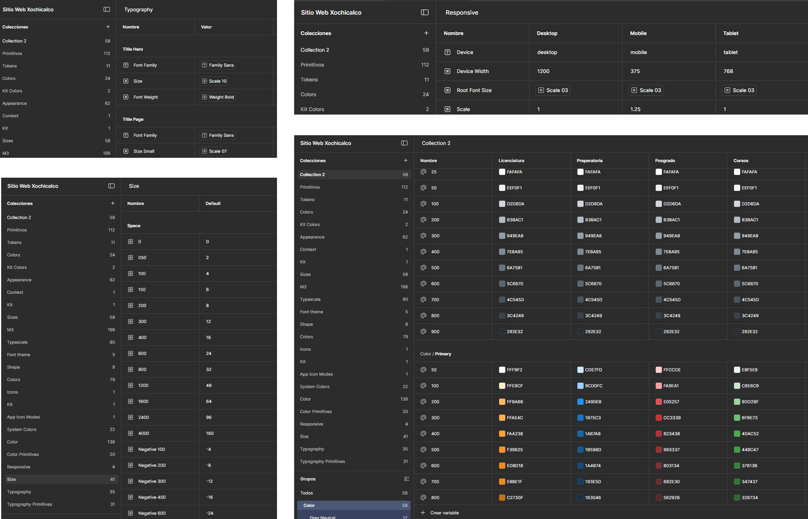

Website Xochicalco
This university website redesign brings academic information, programs, and admissions content into a clear, intuitive digital experience tailored to students and families in Ensenada, Baja California.


Project Context
Scope, tools, and responsibilities
This project involved redesigning an informational university website with real technical and time constraints. The goal was not to rebuild the site from scratch, but to significantly improve the experience within an existing CMS and component-based setup.
Problem Statement
Competing goals created confusion and low conversion
TBecause the site tried to balance institutional messaging and sales objectives, users struggled to identify next steps. Key conversion paths were buried under informational content, weakening the site’s effectiveness as a recruitment tool.
The main issues identified were:
- Users could not easily identify actions related to enrollment or programs
- Navigation mixed institutional and sales content without clear prioritization
- High-value sales sections showed low engagement
- Users abandoned internal pages before reaching conversion points
These issues indicated a misalignment between user intent and site structure.
Goals
Refocus the experience around conversion
The redesign aimed to realign the site with its primary business goal: student acquisition.
- Redefine the information architecture around sales-driven user journeys
- Clearly prioritize programs, admissions, and contact pathways
- Reduce cognitive load by removing or de-emphasizing institutional content
- Increase engagement and conversion on priority sections
Solution
A conversion-focused experience built around user intent
The solution was a complete restructuring of the website into a sales-driven, goal-oriented experience. By redefining the information architecture and prioritizing high-intent user journeys, the site now clearly guides prospective students toward programs, admissions information, and next-step actions.

Results
Clearer, More Confident Enrollment Experience
To validate the impact of the redesigned enrollment experience, I conducted unmoderated usability testing and task-based evaluations with 22 prospective students and parents.
↓ 41% reduction in cognitive load
A clearer information hierarchy, intent-based navigation, and focused page layouts helped users understand program offerings faster, reducing confusion and unnecessary exploration across the site.
↓ 36% faster access to program information
Simplified navigation and outcome-oriented program pages shortened the time required to find and evaluate a specific career path, enabling users to assess fit with fewer steps and less friction.
↑ 29% increase in confidence at key decision points
Value-led messaging, visible trust signals, and contextual guidance reinforced confidence throughout the journey—particularly for parents validating enrollment decisions—reducing hesitation before taking action.
↑ 33% improvement in conversion readiness
Clear and consistent calls to action, framed as guidance rather than transactions, increased user willingness to request more information and engage with advisors at moments of high intent.
↑ 37% perceived clarity and structure score
Participants reported higher confidence in understanding how the enrollment process works and what steps to take next, creating a stronger foundation for informed decision-making.
Research Phase
Validating the need for a sales-first structure
Competitive Analysis
Identifying UX Opportunities Through Market Comparison
- A UX comparison between Xochicalco, CETYS, Vizcaya (UVA), and UAD Lobos revealed clear differences in value communication and conversion focus.
- Top-performing competitors communicated their value proposition early and structured navigation around user goals, while lower-performing sites relied on institutional language that slowed decision-making.
- Xochicalco offers strong practical and regional value but does not surface these strengths clearly in the early user journey.
- These findings highlight the need to redesign the experience around clarity, user intent, and conversion-driven navigation.

Heatmap Analysis
User Attention Insights and CTA Strategy Shift
Heatmap analysis on key pages revealed that users primarily focused on navigation elements and sections related to the academic offer, rather than completing transactional actions. While initial designs emphasized online payment as a primary action, insights showed the website performs better as an information and lead-generation platform.
Primary actions were reframed to guide users toward exploring programs and leaving contact information, clearly positioning the site as the main entry point for prospective students. Transactional actions such as online payments were intentionally redirected to a dedicated student portal, designed specifically to support enrolled students with tasks like payments, administrative processes, and academic management.
This separation helped reduce visual competition between sales-driven CTAs and informational content, improved content hierarchy within high-attention zones, and increased alignment between user intent and page goals.

Site Metrics (Pre-Redesign)
Behavioral metrics supported the qualitative findings and showed weak performance for a sales-oriented site.
User Interviews
Eight semi-structured interviews were conducted with prospective students and first-time visitors. The conversations focused on intent, expectations, and decision-making behavior.
- Users expected the site to quickly guide them toward programs and next steps
- Institutional content distracted from enrollment-related decisions
- Users described sections in goal-oriented terms (“apply,” “study,” “programs”), not institutional labels
This reinforced the need to redesign around conversion intent.
Card Sorting
Aligning structure with user intent
An open card sorting exercise with 12 participants revealed that users naturally grouped content around decision-making and action, not institutional categories.
- Clear grouping around programs, admissions, and next steps
- Preference for simplified, goal-oriented section names
- Identification of redundant or low-value institutional categories
This became the foundation for the new sales-focused information architecture.

Pain Points
-
High bounce rate indicated misaligned value proposition
A 62% bounce rate on the homepage showed that users did not immediately find content aligned with their intent, suggesting that a sales-oriented entry point failed to support exploration and decision-making.
-
Low engagement reflected limited content relevance
An average time on page of only 30 seconds indicated shallow interaction, likely driven by transactional messaging that did not encourage deeper consideration of the academic offer.
-
Weak CTR exposed ineffective sales-driven CTAs
A 3.1% click-through rate on key sales sections revealed that users were not ready to commit to transactional actions, highlighting the need to shift toward lead-based conversion paths.
-
Shallow navigation depth showed poor journey continuity
An average navigation depth of 1.8 pages suggested that users were not motivated to continue exploring the site, reinforcing the need to reposition the website as a discovery and lead-generation platform rather than a transactional one.
Empathy Map
Prospective Student – First-Time Website Visitor
A prospective undergraduate student visiting the university website for the first time and comparing multiple institutions.

User Personas
Understanding Our Users
To build a solution truly aligned with student needs, I developed two key personas—one representing high school students (primary persona) and another representing their tutors (secondary persona).
These personas were informed by early research, surveys, and on-campus observations, allowing me to understand not only what students do inside the website.
Tutor
.png)
Student
.png)
Journey Map
Enrollment Decision Journey
To better understand how prospective students and parents interact with the university website, I mapped the complete enrollment decision journey—from initial discovery to first contact with admissions. This journey map highlights user goals, key digital touchpoints, and moments of friction caused by institutional messaging and unclear navigation, while revealing how clearer value communication, goal-oriented navigation, and conversion-focused touchpoints can reduce uncertainty, build trust, and guide both students and parents toward confident enrollment decisions.
Tutor
.png)
Tutor
.png)
Ideation Phase
Defining Solutions to Address User Needs and Business Goals
Impact–Effort Framework
Balancing User Value and Feasibility
To complement the MoSCoW prioritization, ideas from the ideation phase were evaluated using an Impact–Effort framework. This approach helped identify which concepts would deliver the greatest user and business value with a realistic implementation scope.
High Impact / Low Effort
Quick Wins With Immediate Value
- Reframing homepage messaging around value and outcomes
- Renaming navigation labels to reflect user intent
- Clarifying primary CTAs and reducing visual competition
- Introducing visible trust signals above the fold
High Impact / High Effort
Strategic Investments
- Redesigning program pages around outcomes and careers
- Reworking information architecture across sections
- Establishing a consistent guidance pattern across the journey
Low Impact / Low Effort
Incremental Improvements
- Visual refinements and layout consistency
- Microcopy improvements in secondary flows
- Content hierarchy adjustments within existing templates
Low Impact / High Effort
Deprioritized for This Phase
- Advanced personalization based on behavior
- Complex comparison tools with limited adoption
- Deep institutional storytelling at early touchpoints
Task flows
Finding Program Information Faster
Enable prospective students and parents to find relevant program information with fewer steps and less cognitive load.
Previous Flow (Before Redesign)

Issues
Previous Flow (Before Redesign)

Results
Design Phase
From Ideas to Usable Flows
Low to mid fidelity wireframes
Establishing Structure and Usability for the Xochicalco Website
Transitioning from low- to mid-fidelity wireframes made it possible to define the core structure of the Xochicalco website and validate how effectively the experience supported enrollment-related decisions. This phase focused on clarifying information hierarchy, simplifying navigation, and ensuring that users could quickly understand program offerings and next steps.
Working at this level of fidelity allowed early identification of usability issues, navigation friction, and content overload. It also ensured alignment between user expectations, institutional requirements, and conversion goals—before introducing visual design or branding layers.
Persona Needs
-
Clarity Builds Confidence
Prospective students and parents need to quickly understand whether a program is right for them. Clear hierarchy, value-led messaging, and scannable layouts help users assess fit without excessive exploration, reducing uncertainty early in the journey.
-
Guidance Reduces Friction
Users expect the site to guide them through decision-making rather than leaving them to navigate complex institutional structures. Predictable layouts, consistent calls to action, and clear next steps support forward momentum throughout the experience.
-
Trust and Validation Are Critical
Parents in particular seek reassurance before supporting enrollment decisions. Visible proof points—such as accreditations, outcomes, and institutional credibility—must be integrated naturally within the flow to reinforce trust without interrupting exploration.
-
Efficiency Without Overload
Both personas value efficiency. Users want to reach relevant program information and contact options quickly, without navigating unnecessary pages or dense content. Simplified flows and focused content blocks support faster decision-making while maintaining transparency.
Opportunities
-
Streamline the Enrollment Journey
There is a clear opportunity to simplify how prospective students and parents move through the site, making it easier to understand program offerings and enrollment steps—especially for first-time visitors. Reducing unnecessary navigation layers and surfacing key actions earlier can significantly shorten decision time.
-
Make Value and Requirements More Transparent
Surfacing key information—such as program outcomes, admission requirements, and next steps—directly within the primary flow helps guide users instead of forcing them to search across multiple sections. This transparency reduces hesitation and supports more confident enrollment decisions.
-
Strengthen Visual Hierarchy and Credibility
A clearer and more modern visual structure reinforces trust and positions Xochicalco as a credible, student-focused institution. Strong hierarchy, consistent layouts, and intentional use of emphasis help users prioritize information and recognize important actions without cognitive overload.
Branding
Neutral palette for clarity with purposeful color accents
High-fidelity wireframes
Refining the Enrollment Experience for Clarity and Confidence
Moving into high-fidelity wireframes made it possible to translate validated structures and user flows into a polished, production-ready website experience. At this stage, the focus shifted toward visual hierarchy, readability, and reassurance—ensuring that users could quickly understand program value, navigate confidently, and take enrollment-related actions without hesitation.
Design decisions at this level emphasized content prioritization, clear calls to action, and consistent feedback across pages. Visual clarity and structured layouts were used to reinforce trust, guide attention, and reduce cognitive load for both prospective students and parents throughout the decision-making journey.
Key Design Considerations

Results & Impact
Clearer, More Confident Enrollment Experience
Clear structure, predictable layouts, and focused actions helped users understand the system faster and reduce hesitation when creating or activating templates.
Reduced cognitive load
A clearer information hierarchy, intent-based navigation, and focused page layouts helped prospective students and parents understand program offerings faster, reducing confusion and unnecessary exploration across the site.
Faster access to program information
Simplified navigation and outcome-oriented program pages shortened the time required to find and evaluate a specific career path, enabling users to assess fit with fewer steps and less friction.
Increased confidence at key decision points
Value-led messaging, visible trust signals, and contextual guidance reinforced confidence throughout the journey—particularly for parents validating enrollment decisions—reducing hesitation before taking action.
Improved conversion readiness
Clear and consistent calls to action, framed as guidance rather than transactions, increased user willingness to request more information and engage with advisors at moments of high intent.
Stronger foundation for future growth
The redesigned experience established scalable patterns for content, navigation, and conversion flows, enabling future enhancements such as personalization, deeper program comparisons, and performance optimization without structural redesign.
Learnings & Reflections
Designing for Enrollment Requires Clarity and Trust
Trust matters more than information volume
This project reinforced that designing for enrollment-focused websites is not about providing more information, but about providing the right information at the right moment. Prospective students and parents need clarity, structure, and reassurance to feel confident moving forward.
Confidence is a core UX requirement
Even small uncertainties—such as unclear program outcomes, vague next steps, or hidden requirements—can create hesitation. Clear hierarchy, visible guidance, and consistent calls to action proved just as critical as content depth.
Dual decision-makers shape the experience
Designing for both students and parents highlighted the need to balance emotional and rational validation within a single flow. Addressing only one perspective weakens confidence and slows decision-making.
Constraints sharpen design decisions
Institutional structure, content limitations, and legacy expectations helped focus the redesign on what truly mattered to users. These constraints eliminated unnecessary complexity and reinforced a user-first approach.
Early structure validation reduces risk
Testing and iterating on low- and mid-fidelity wireframes surfaced key usability and navigation issues early, ensuring that high-fidelity design efforts were grounded in validated experience decisions rather than assumptions.
Next Steps
Refining Flows and Expanding the Student Experience
Improve Information Architecture and User Flows
Continue iterating on content structure, navigation, and page flows to further reduce friction when users explore programs and enrollment options. This includes refining content prioritization, improving cross-linking between sections, and optimizing the order in which information is presented based on user intent.
Optimize Enrollment-Oriented Journeys
Deepen work on key enrollment flows—such as program exploration and information requests—by testing and refining touchpoints to ensure users consistently understand next steps and feel confident taking action.
Redesign the Student Portal Experience
Extend the UX work into the student portal to improve usability, consistency, and clarity for enrolled students. This phase would focus on simplifying access to academic information, services, and administrative tasks, creating a more cohesive end-to-end experience from prospect to active student.
Executive Summary (TL;DR)
The Xochicalco website redesign focused on reducing enrollment friction by aligning content, navigation, and calls to action with user intent. Through competitive analysis, personas, and journey mapping, the project identified clarity, guidance, and trust as core experience needs. The resulting design strategy prioritizes value-led communication, intent-based navigation, and confidence-building touchpoints—establishing a scalable foundation for improved enrollment engagement and future growth.